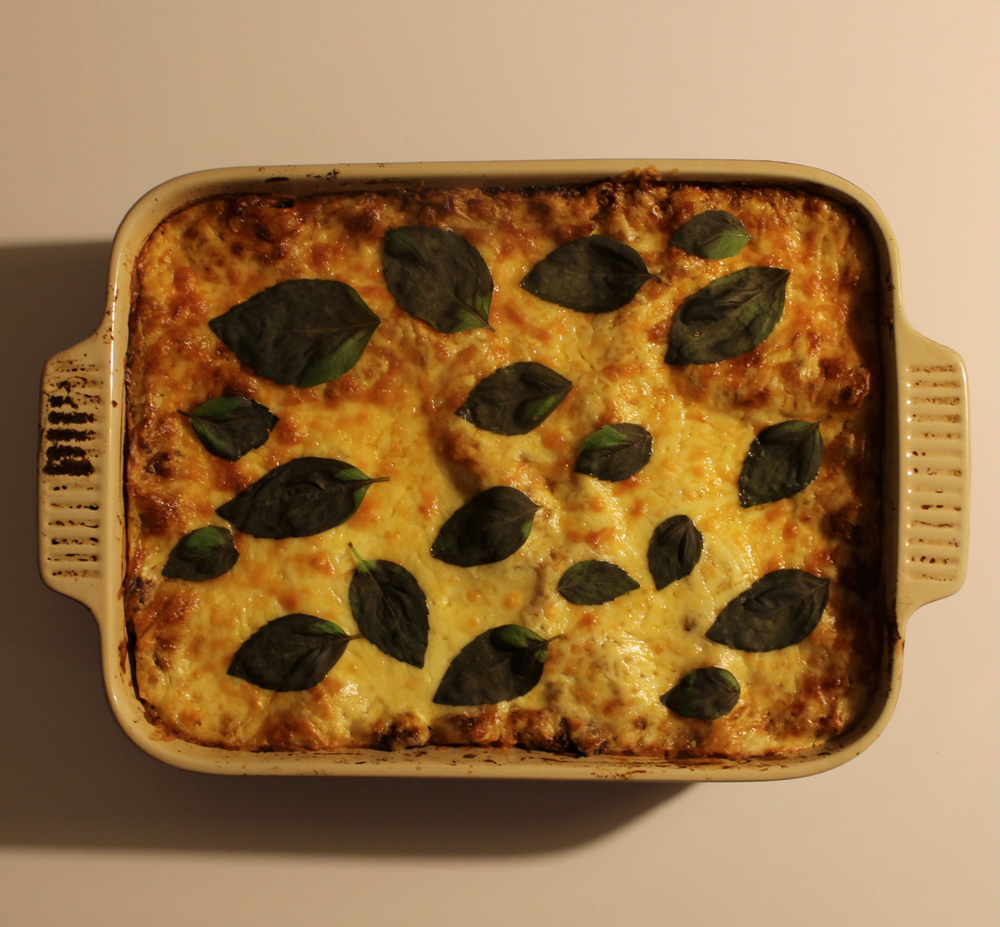

Layers of rich beef bolognese, pasta sheets and creamy homemade bechamel, baked until bubbling and golden, then finished with fresh basil.

Servings
6 servings
Quick Stats
1.5–2 hrs • Comfort Food • Base: 6 servings
Ingredients
1 batch beef bolognese sauce
1 pack lasagne pasta sheets
75g butter
75g plain flour
600ml milk
150g grated cheese
1 handful basil leaves
Method
Make the meat sauce: Prepare the beef bolognese sauce and let it cool slightly so it is easier to layer.
Make the bechamel: Melt the butter in a saucepan. Stir in the flour and cook for 1 minute, then gradually whisk in the milk. Cook until smooth and thickened, seasoning to taste.
Layer the lasagne: Spread meat sauce over the base of a baking dish, add pasta sheets, then bechamel. Repeat the layers, finishing this stage with meat sauce.
Bake covered: Cover with foil and bake at 180°C for 30 to 40 minutes, until the pasta is tender and the sauce is bubbling.
Finish uncovered: Remove the foil. Add the final layer of bechamel and scatter over the cheese. Bake uncovered for another 15 to 20 minutes until golden.
Rest and serve: Rest for 10 to 15 minutes, then top with basil leaves and slice.
Tips
Use the existing Beef Bolognese recipe as the meat sauce base.